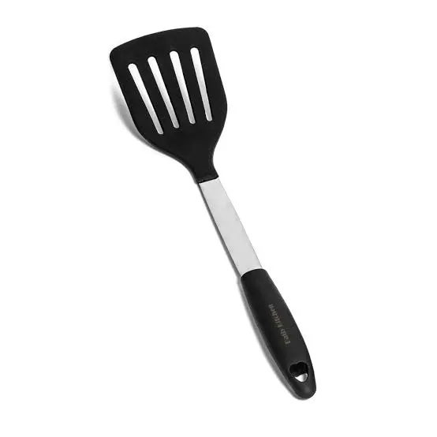

Friends
- 390 Buddies
- Big Will
- Conan the Librarian
04/09/08 : Spatulas
Yesterday I went to the store and got ssome much needed spatulas!(what better way to say i love myself than to buy myself a spatula?)
04/08/08 : Cookie Cupcakes
my favorite cartoon character is cookie and my favorite desert is cupcakes.So cookie cupcakes are best of both the worlds.Did you know? Cookie character once said "sometimes me thinks what is love and then me think love is what cookie for.Me give up the last cookie for you" I wonder if the same applies for the cupcakes? (if so i dont think i can love anyone)